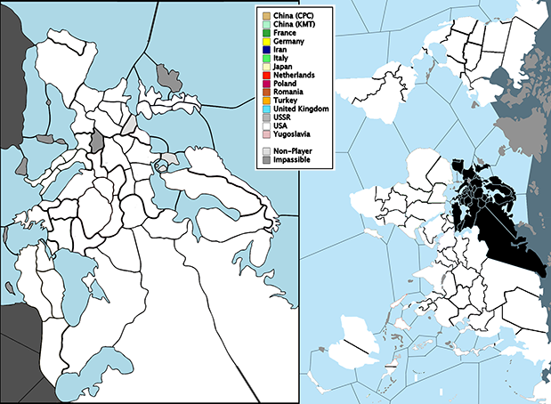

Viewing turn 1 / 1
Show Previous Turn
Show Next Turn
New Turn
Delete Later Turns
Reset Game
Pop Out Map
Resources generated this turn by territories controlled at the end of last turn. The expected changes for next turn are shown in red.
Territory
Owner at Turn Start
Current Owner
